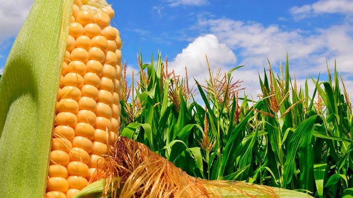
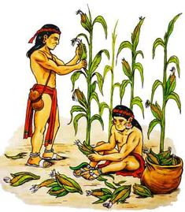
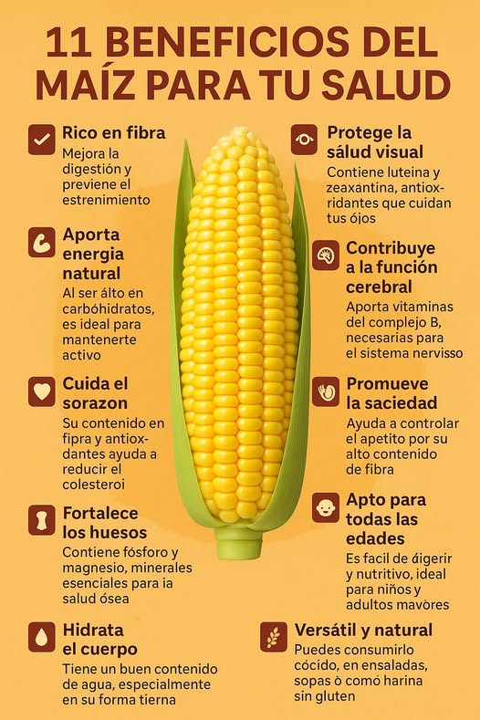
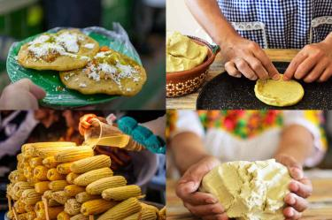
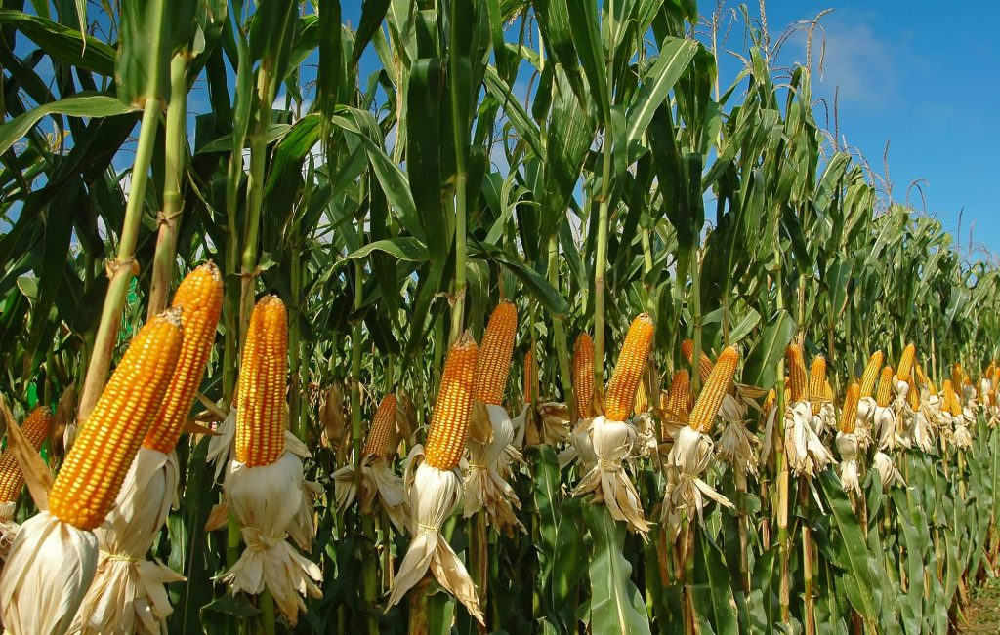
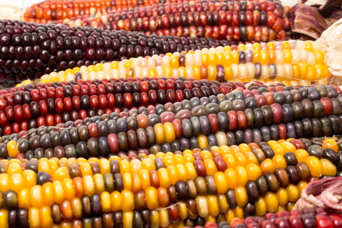

Artículos Destacados

El maíz
El maíz es uno de los alimentos más importantes de nuestra alimentación y también una parte muy valiosa de la historia de muchos pueblos. Desde hace muchísimos años ha estado presente en la mesa de las familias, ya sea en forma de harina, mazorca, tortillas, arepas o diferentes platos tradicionales. Es un alimento que, además de ser muy versátil, forma parte de la vida diaria de millones de personas.

Origen
El origen del maíz se remonta a tiempos muy antiguos, cuando fue cultivado por los pueblos indígenas de América. Con el paso de los años, este cereal se fue extendiendo y convirtiéndose en un alimento esencial para muchas culturas. Su historia demuestra que no solo es un producto agrícola, sino también un símbolo de tradición, esfuerzo y desarrollo.

Importancia nutricional
El maíz es importante porque aporta energía y nutrientes que ayudan al cuerpo a funcionar correctamente. Es un alimento que puede formar parte de una dieta balanceada y que se adapta a muchas preparaciones distintas. Por eso, ha sido tan valioso a lo largo del tiempo: no solo alimenta, sino que también ofrece variedad y practicidad en la cocina.

Productos derivados
Del maíz se pueden obtener muchísimos alimentos que seguramente vemos todos los días. Entre ellos están las arepas, tortillas, palomitas, harina de maíz, cachapas, mazorcas y otros productos que forman parte de la gastronomía tradicional. Esto demuestra que el maíz es un ingrediente muy especial, porque puede transformarse en diferentes comidas sin perder su valor.

Cultivo
El cultivo del maíz es un proceso que requiere dedicación, cuidado y paciencia. Todo comienza con la siembra, luego la planta va creciendo poco a poco hasta llegar al momento de la cosecha. Detrás de cada mazorca hay trabajo de campo, esfuerzo y la participación de personas que viven de la agricultura. Por eso, el maíz también representa trabajo y compromiso.

valor cultural
Más allá de ser un alimento, el maíz tiene un valor cultural muy grande. Está presente en recetas familiares, celebraciones, tradiciones y costumbres que se han transmitido de generación en generación. En muchos lugares, hablar de maíz es hablar de identidad, de historia y de raíces. Es un producto que sigue acompañando a las personas tanto en lo cotidiano como en lo cultural.